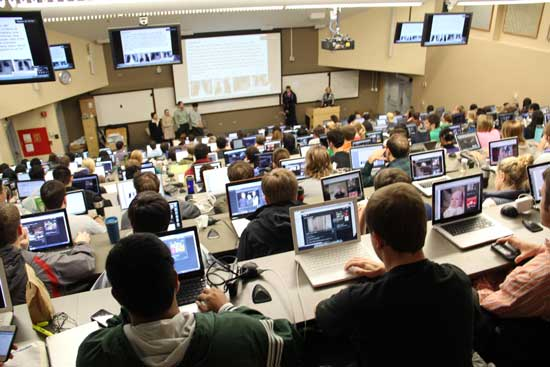

Where Is Everybody?
{kind=link}
Why is it that the more people who are in a classroom the more reserved and quiet students become?
This lecture is dead, all of these people and it is dead quiet in here, enough to hear the clicks from
kids typing away at their computers. My guess is that they are not even taking notes, they are more
likely surfing the web. In fact, I can see that they are not taking notes. As I look down the slope
of the auditorium’s seats, I see a kid on Facebook, naturally, another is using Photoshop, another is
surfing some sort of fantasy forum site, and, my personal favorite, the kid next to me is playing those
Gameboy Pokémon games on his computer. Actually, I might have to ask him how he does that. Those games
were the shit.
For what reason is it so hard for us all to pay attention? Hell, even I am here typing on my computer.
I mean, it isn’t like the teacher is boring, nor is the class. He is constantly trying to get us to
participate, asking us questions, petitioning us to interact with him. He shows us cool videos and talks
about all kinds of crazy technologies and things that are happening in the World right now. It is actually
a fun class, although eerie at times. So why does it look as though we are all being forced by our moms
to sit through church on Sunday, somehow allowed to bring laptops? “Oh come on mom I am going to take
notes on the sermon.” Yeah. Right.
It seems like they aren’t here. It seems like their bodies are all here but their conscious is elsewhere,
or half here half somewhere else considering the occasional hand raise when the teacher asks something
like “who knew that Coca Cola originally had cocaine in it?” It allows makes me laugh as I watched the ones
who are paying attention the least shoot up their hand any moment they are able to say yes. Oh by the way,
I am definitely one of those people, hell I even wanted to add that I knew that Coca Cola was also started
by Pablo Escobar, this being the reason it originally had cocaine in it. Take that teach.
No but seriously, why are we all always somewhere else? Is it that hard for us to stay here in class listening
to the professor without having our minds wondering all over the World within the span of ten minutes? It
must just be easier than facing the fear of raising our hands and contributing to the discussion at hand,
risking saying something dumb or maybe completely bombing the execution of speaking the visionary words that
are rattling around in your head. Or maybe it is just more exciting to hangout with those celebrities in
L.A., Pokémon in that digital Universe, or chilling with those Instagramers in Thailand. If, somehow, we
were to find ourselves there at one of those places, would our minds still be elsewhere? Would we finally
be able to experience the World at hand?